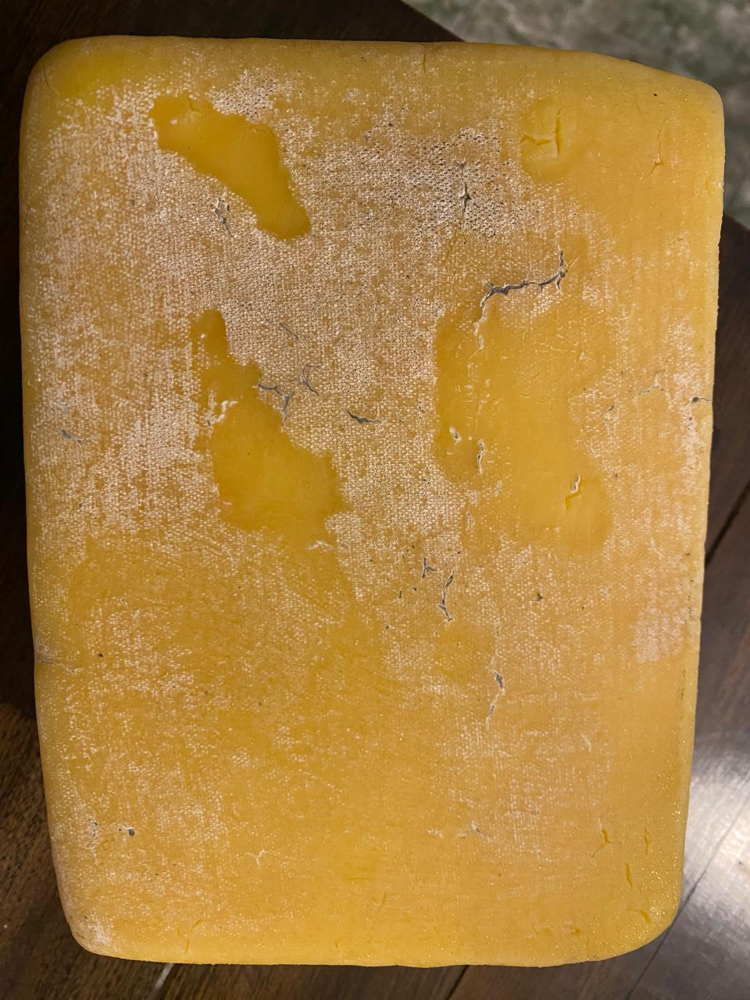

Quesos Saraguros nace como una empresa pequeña como fundador el señor Antonio Contento quien funda Quesos Saraguros como una alternativa para crecer como persona y dar sustento a su familia así que esta empresa nace de eso de una necesidad, Antonio contento no tenia mucho conocimiento y mucho menos personal así que los primeros años el tenia que hacer todo desde recoger la leche de su proveedores hasta vender el producto, inicialmente solo él estaba involucrado pero después de una crisis comercial donde el producto no se vendía, sus hermanos tomar la iniciativa de crear sucursales para que así quesos Saraguros se de a conocer al pueblo y posteriormente al país.
Quesos Saraguro es una empresa basada en la creación, producción y comercialización de quesos y yogures de diferentes tipos y sabores, estamos presentes en diferentes puntos de país en ciudades como Cuenca y Quito nuestra fabrica está ubicada en Saraguro junto a la primera sucursal de quesos Saraguro, nuestros quesos además de nuestras sucursales los encuentras en distintas tiendas al nivel de país cabe recalcar que los quesos que encontraras son de la línea comercial, las otras líneas las encuentras en nuestras sucursales.
De Saraguro para el mundo ofrecemos un gran variedad de quesos divididos en tres líneas como son la línea económica sus quesos son el fresco y el amasado, línea comercial con quesos como el andino, mozzarella y otros, y como final la línea premium donde su ubican los quesos maduros, con sus mayores exponentes que son el queso andino madurado con un tiempo exacto de maduración de dos meses, y el queso Montañez con un año de maduración , además de eso en nuestras sucursales también encontraras las pizzas con las recetas de Contentos Pizza otra de las empresas creadas por Antonio Contento. Así mismo nuestras sucursales ofrecen alimentos como el café, el chocolate, los tamales las humitas, desayunos y mucho mas


Tenemos una gran variedad de sucursales de las mas importantes destacamos la sucursal central la vía panamericana Saraguro-Loja en el kilómetro 5 donde también funciona nuestra fabrica, donde también nos puede encontrar es el centro de Cuenca en las calles Sucre y Presidente Borrero, también en la vía cuenca-Molleturo sector el cajas kilometro 6 y un poco mas adelante en el kilometro 48 en el sector Miguir.
Como proyectos a futuro tenemos pensado incursionar en la industria de las salsas, las mermeladas, los manjares, como proyecto inmediato tenemos la creación de una cerveza artesanal que nace de nuestras raíces y como no más quesos.

Descripción de la imagen 4.
Descripción de la imagen 5.
Descripción de la imagen 6.